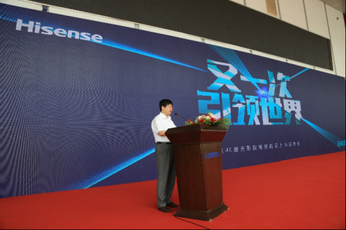

个人资料

- 创建日期：2016年7月7日
- 个性签名：be yourself
海信发布全球首款DLP超短焦4K激光影院电视
【TechWeb报道】在欧洲杯引发的“海信效应”还没有结束，海信又放出大招。7月7日，海信在青岛正式发布了全球首款DLP超短焦4K激光影院电视，这标志着激光显示技术正式步入4K显示新时代。同时，海信还发布了行业首款88英寸激光影院电视，让更多消费者可以提前实现家庭影院梦想。

海信集团总裁刘洪新在发布会现场介绍了海信激光影院产品研发历程，历经十年磨砺，海信已实现从激光电视研发、设计到整机生产制造的完全自主运营，并取得217项专利技术，其100英寸激光影院电视产品上市不到三年时间，已占据85英寸以上超大屏电视市场近30%的市场份额。
“4K激光影院电视是我们近两年投入最大的整机研发项目，4K激光影院电视的技术难度远远高于4K液晶电视。海信采用的DLP投影方式比LCOS投影方案的对比度更高，画面细节更清晰锐丽，图像效果更具层次感。坚持自我让我们收获了全球最具竞争力的超高清影院电视产品。”刘洪新说。
海信激光电视事业部总经理高玉岭介绍，全世界都没有做成的事，不代表海信也做不了。海信4K激光影院电视突破了三大技术难关：首先采用了高处理能力光学引擎，其处理能力比2K激光电视产品提高了300%，从而做到了对830万束光线的精细控制，实现830万像素的图像表现；其次，4K激光电视需要高分辨率镜头设计，海信4K镜头做到了每毫米光学分辨率达到186束光线；第三，4K激光电视制造要做到微米级物料控制精度及镜头装调精度，海信4K激光影院电视采用了高精度制造工艺，机械加工达到了接近极限值的10微米精度，镜头装调精度达到5微米，误差不到一根发丝直径的1/20。
海信4K激光影院电视还采用了院线级超高清激光放映技术，应用了与IMAX影院相同的显示方案与3D实现方案，以及菲涅尔无源仿生屏、无需布线的5.1专业级家庭音响，让用户在家里也可以享受到不受环境光限制的24小时生态影院体验。该产品不仅在显示上独占鳌头，也具备互联网电视功能，它应用VIDAA智能操控系统，拥有15000+部电影、150000+集电视剧， 73000+集动漫，加上综艺、动漫、记录片等资源，累计视频时长超过100万+小时，丰富的内容资源让激光电视真正成为永不落幕的私家影院。
与4K大屏液晶电视相比，海信4K激光电视的光利用效率更高，功耗约为相近尺寸液晶电视的1/3、响应速度比液晶电视快370多倍，特别是100英寸4K激光影院的售价只有69999元，约为相近尺寸液晶电视的1/10，性价比优势非常突出。而相比定价5万美元的LCOS 4K投影机产品，海信这款4K超短焦激光影院产品同样性价比惊人。